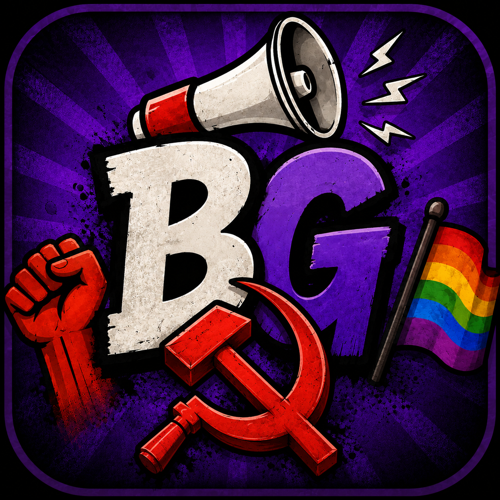

Dernière mise à jour : 13 septembre 2026
Les données collectées par Bingauchiste sont traitées par Antoine LE PROVOST, agissant à titre non professionnel (projet personnel, sans activité commerciale ni monétisation), contact : contact.bingauchiste@gmail.com.
L'application collecte les données suivantes :
Bingauchiste ne cherche pas à déterminer ou à déduire les opinions politiques, convictions religieuses ou autres caractéristiques sensibles des utilisateurs à partir de leur utilisation de l'application, y compris à partir des thèmes de grilles joués ou créés.
L'application n'utilise, à ce jour, aucun outil de mesure d'audience ni de suivi publicitaire (pas de Firebase Analytics, ni d'outil équivalent). Elle ne dépose aucun cookie ni traceur à des fins publicitaires.
Ces données sont traitées sur la base de l'exécution du contrat qui te lie à l'éditeur en utilisant l'application (article 6.1.b du RGPD) : elles sont nécessaires au fonctionnement des fonctionnalités que tu utilises (compte, parties, amis, grilles personnalisées, avis, chat de duel). Le traitement des signalements repose en complément sur l'intérêt légitime de l'éditeur à assurer la sécurité et la bonne tenue de l'application (article 6.1.f). Aucun traitement décrit dans cette politique ne repose sur ton consentement au sens du RGPD ; les droits qui te sont ouverts (article 9 ci-dessous) dépendent de la base légale applicable à chaque traitement.
Ces données sont utilisées exclusivement pour :
Ces données ne sont ni vendues, ni partagées à des fins publicitaires ou commerciales avec des tiers.
Les données peuvent être accessibles, dans la mesure nécessaire au fonctionnement de l'application, aux prestataires techniques utilisés par Bingauchiste, notamment Google/Firebase, agissant en qualité de sous-traitant (voir article 6).
Certaines données sont également rendues accessibles aux autres utilisateurs lorsque la fonctionnalité concernée l'implique : le pseudo, l'avatar, les grilles publiques, les avis, les messages et émotes échangés dans les duels, ainsi que les suggestions et signalements de bugs publiés sont visibles par tout ou partie des autres utilisateurs selon la fonctionnalité.
Bingauchiste utilise deux services de Firebase (Google Cloud Platform) :
L'application n'utilise ni Firebase Storage, ni Cloud Functions, ni Firebase Cloud Messaging : les images sont stockées directement dans Cloud Firestore, et les notifications sont générées localement sur ton appareil plutôt qu'envoyées depuis un serveur.
Ce prestataire est susceptible de traiter ou stocker des données en dehors de l'Union européenne, notamment aux États-Unis. Ces transferts sont encadrés par les clauses contractuelles types de la Commission européenne et les engagements de conformité au RGPD publiés par Google.
Les données sont conservées selon les durées suivantes :
Certaines données peuvent exceptionnellement être conservées au-delà de la suppression du compte lorsque cela est nécessaire au respect d'une obligation légale, à la constatation ou à la défense de droits en justice, à la sécurité de l'application ou à la prévention des abus (par exemple pour empêcher le contournement d'une sanction). Dans ce cas, les données sont conservées pendant la durée strictement nécessaire à cette finalité, puis supprimées.
Une grille personnalisée supprimée par son créateur disparaît également pour les utilisateurs qui l'avaient importée.
L'éditeur met en œuvre des mesures techniques et organisationnelles raisonnables destinées à protéger les données personnelles contre l'accès non autorisé, la perte, l'altération ou la divulgation. Les échanges entre l'application et Firebase sont effectués via des connexions chiffrées. L'accès aux données de modération est limité à l'éditeur.
Conformément au Règlement Général sur la Protection des Données (RGPD), tu disposes des droits suivants sur tes données, dans les conditions et limites prévues par la base légale applicable à chaque traitement (voir article 3) :
La suppression de compte, immédiate et sans justification requise, est disponible directement dans l'application (Amis → zone dangereuse), ou via cette page si tu n'as plus accès à l'application. Pour toute autre demande relative à tes données, contacte-moi à : contact.bingauchiste@gmail.com
Si tu estimes que tes droits ne sont pas respectés, tu peux également introduire une réclamation auprès de la Commission Nationale de l'Informatique et des Libertés (CNIL), autorité française de contrôle, via cnil.fr.
Bingauchiste est réservée aux personnes âgées de 15 ans ou plus. Aucun compte ni traitement de données n'est prévu pour les utilisateurs de moins de 15 ans, sans exception.
Le compte est associé à un identifiant technique généré par l'application et conservé sur l'appareil, sans email ni mot de passe associé. En l'absence de mécanisme de récupération, la perte de cet identifiant (par exemple en cas de changement d'appareil ou de désinstallation) peut entraîner la perte définitive d'accès au compte et à son contenu.
Cette politique de confidentialité peut être amenée à évoluer avec les fonctionnalités de l'application. La date de dernière mise à jour figure en haut de ce document.